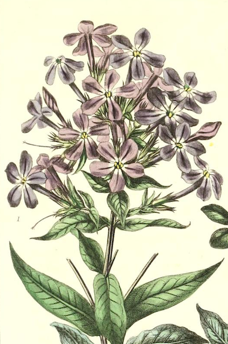
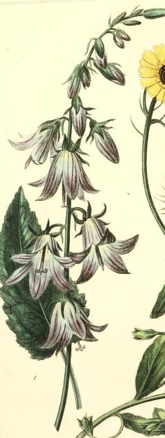
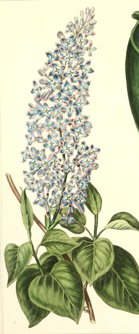
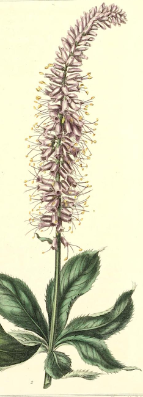

-

1. Allium
Unity, Humility, Patience
Known for their strong scent and use in the kitchen, it's no wonder that the name Allium derives from the Latin word for garlic, and also potentially a Greek word "aleo," which means to avoid. Allium is technically the name of a genus that contains many varieties of the purple plant, but almost all have enjoyed a legacy in both culinary and medicinal contexts.
In the Victorian era, the blooms held a more abstract but significant meaning according to each of their colors. Generally speaking, allium means good fortune and patience, because the blossoms sprout from a single bulb. Purple allium specifically represents royalty, admiration, and respect. This flower has enjoyed cultivation all over the world, and has thus come to mean many things in a variety of contexts. Shakespeare makes reference to their ability to inspire tears in The Taming of the Shrew.
-

2. Bellflower
Gratitude, Constancy
Also known as campanula, the Bellflower originates from a Greek myth that features Aphrodite and a mirror; according to legend, Aphrodite possessed a mirror she used to seek beautiful images from the mortal world. When she lost it, she sent her son Eros to recover it--he found and dropped it, and where the shards fell on the earth, Bellflowers sprouted. More likely, the flower has this association due to its uncommonly shimmery seeds.
Etymologically, campanula is a diminiuitive form for "bell," in Latin, and the flower's distinct bell-like shape has colored its symbolism for generations. In the Victorian period specifically, the Bellflower was used to convey a sense of gratitude and was gifted as a way of thanking someone who had done one a favor. The Bellflower also has significant ties to St. Dominic because its flowers are said to resemble his penitence.
-

3. Lilac
First Love and First Spring
"I cannot understand why my arm is not a lilac tree" -Leonard Cohen, Beautiful Losers (1966)
In some folk-medicine, lilac blooms were used to treat gout, rheumatism, coughs, digestional issues, and infections from open wounds. However, symbolically speaking, the bloom carries a far less practical connotation that varies depending on the its exact shade. Light purple lilacs, like the variety depicted on this card, evoke the joy of first love, and were commonly featured in floral arrangements meant to make romantic gestures.
Like the majority of flowers in this index, the lilac purportedly traces its origin to a hyper-specific Greek myth. Pan, the god of the wild, fell arduously in love with a nymph named Syringa. As these stories often go, Syringa did not reciprocate this "love," and in order to avoid violation, transformed herself into a lilac shrub. Pan, determined to conquest her even in this newly herbacious form, famously constructed his signature pan flute from the hollow stems of the new lilac plant. The lilac has more symbolic legacies in different cultures, of course; the Celts believed the plant had magical properties and found its scent intoxicating, and it was subsequently featured in some of their relgious ceremonies. In Russia, a sprig of lilac held over the forehead of a newborn child is supposed to impart a sense of great wisdom.
-

4. Speedwell
Enduring Beauty, Perserverance, Recovery
The Speedwell is part of the genus Veronica, whose name is taken from St. Veronica, the saint famous for drying Christ's tears with her veil during his crucifixion. When he gave her the cloth back, it carried a vision of his face within it, and thus the veil took its place as an early relic in the Catholic Church. Speedwell, as a form of Veronica, has thus been associated with comfort, recovery, and its bright flowers came to represent the eyes of Christ.
Before Christinanity took prominence in Western Culture, the speedwell held a vital place in Roman culture as well--the plant was widely regarded as an almost miraculous cure-all for ailments of many kinds. Though it has lost its medicinal use since then, the associate between Speedwell and recovery endures to the present.
-
5. Sweet Scabious
Widowhood, Unfortunate love
"Scabiosa flowers were dark as garnet brooches; the nicotiana a veil of tossing crimson stars. Nothing was usual, or a dull color. All was exceptional, designed to be exceptional since it had been planned as the background for a beauty by the beauty" -Elizabeth Enright
Unlike many of the flowers in this index, the origins of the scabious' name are less than poetic--it's derived from the Latin word "scabere" which means to scratch, probably because ancient Romans used the plant's blooms to treat scabies and other topical skin diseases and irritations. The flower is also colloquially called the pinwheel flower in reference to its perfectly rounded shape.
The sweet scabious specifically comes only in a few shades ranging from dark purple to an almost black hue. In light of its dark petals, the bloom has historically been associated with love cut short, and with mourning brides and widows specifically.